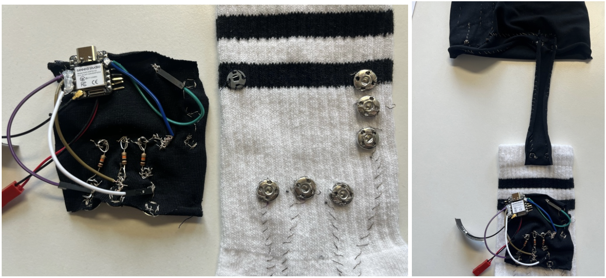
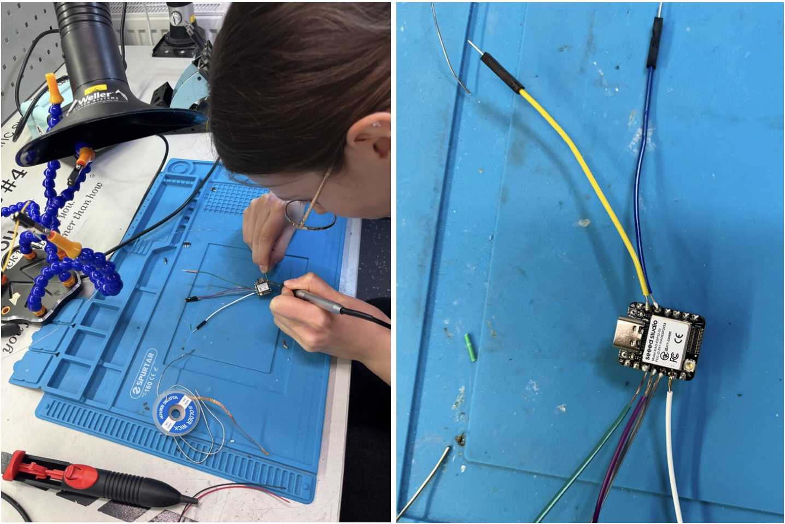
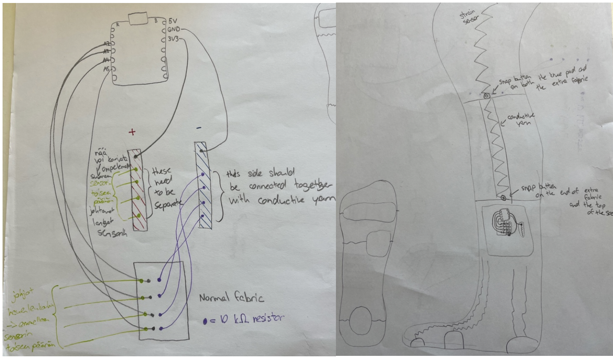
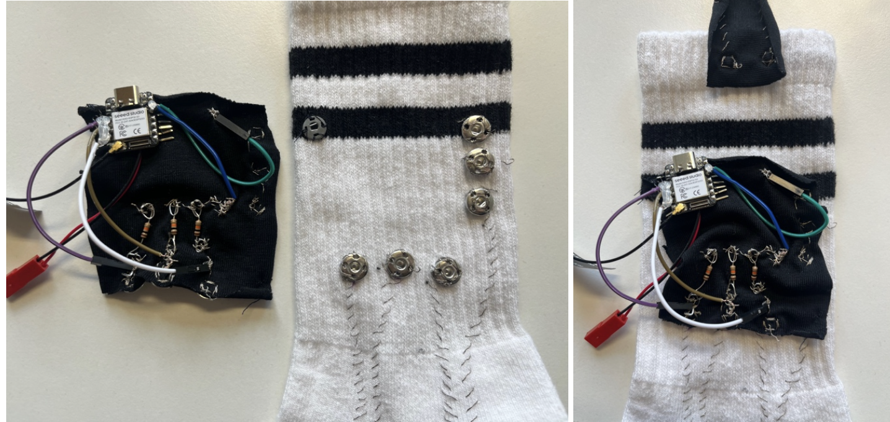

Projects
Smart Socks
Smart Wearables ELEC-E7840 · Spring 2026
Together with my partner, I designed and implemented a functional wireless smart clothing prototype (smart socks and a knee brace) for real-time physical activity recognition. My specific responsibilities included integrating the hardware into the socks, Arduino programming, and building a machine learning model for real-time recognition.

Initial design sketches for the sensor placement and electronics.
Project phases
Smart textile manufacturing (E-textiles)
I fabricated soft piezoresistive pressure sensors using a multi-layer textile structure, conductive fabrics, and conductive threads. I positioned the sensors at critical pressure points on the sole of the foot (heel, ball of the foot, and arch) as well as on the knee brace.

Textile pressure sensors, conductive connections, and the ESP32 microcontroller integrated into the wearable prototype.
Embedded electronics and circuitry
I designed and soldered voltage divider circuits without a breadboard and integrated them directly into the socks using snap fasteners to ensure washability and wearability. I programmed two Seeed XIAO ESP32S3 microcontrollers to read sensor data and transmit it wirelessly via Wi-Fi.

Soldering and preparing the ESP32 microcontroller for wireless sensor data collection.

Final prototype with the electronics attached to the sock using snap fasteners.
Signal processing and machine learning
I built a Python tool for real-time data reception, preprocessing, and feature extraction (sliding time window, statistical features, normalization). I trained and optimized a classification model (Random Forest) capable of recognizing eight different activities and postures (e.g., walking, using stairs, sit-ups, cross-legged sitting) with 95% validation accuracy.
User testing and evaluation
I collected and analyzed data from five external test subjects and measured the system's usability and comfort using a structured questionnaire.
What did this course and project teach me?
I gained practical insight into how piezoresistive materials respond to mechanical pressure and compression, and how using different material layers prevents sensor saturation under extreme pressure.
I deepened my knowledge of electronics fundamentals, circuit design, and the use of conductive thread. After a hiatus of nearly ten years, I also had the opportunity to visit an electronics workshop, as we needed to solder wires to an ESP32 microcontroller to make the system wireless.
I learned to write C++/Arduino code for the microcontroller to collect analog data and to wirelessly synchronize data transmission from two separate devices to a computer.
I learned to execute the entire machine learning pipeline—from data cleaning and normalization to comparing classifier performance (Decision Tree vs. Random Forest), analyzing confusion matrices, and utilizing an "Unknown" class to improve model reliability.
My key insights
The interface between the "hard" and "soft" worlds is the biggest stumbling block
The circuit works in theory, but in the context of a garment, it stretches, twists, and is subjected to constant mechanical stress. My most significant insight was to move the microcontroller and rigid connections off the flexible sock and onto separate panels attached via snaps, while reinforcing the solder joints with a non-conductive material (hot glue). Ensuring a garment is wearable and durable requires just as much mechanical design as it does electronics. This also highlighted the fact that design and testing go hand in hand; without testing, a design can prove completely unusable.
Machine learning quality depends on physical fit, not just code
The challenges encountered with the machine learning model when used by different people (accuracy ranging from 65% to 87%) stemmed not from the algorithm itself, but from variations in foot size and gait; these differences caused the sock to stretch in various ways, leading to anomalies in the underlying signal. I realized just how critical user-centric design, sensor adjustability, and data diversity are for the generalizability of smart clothing.
Iterative "trial and error" and tolerating uncertainty
As I had never worked with circuitry or wearable electronics before, the project taught me perseverance. Dealing with broken solder joints, debugging code, and facing model failures right before the live demo was frustrating, but continuous testing, learning from mistakes, and quick reactions ultimately led to the course's top grade (5/5).
©2026 Aino Karjalainen